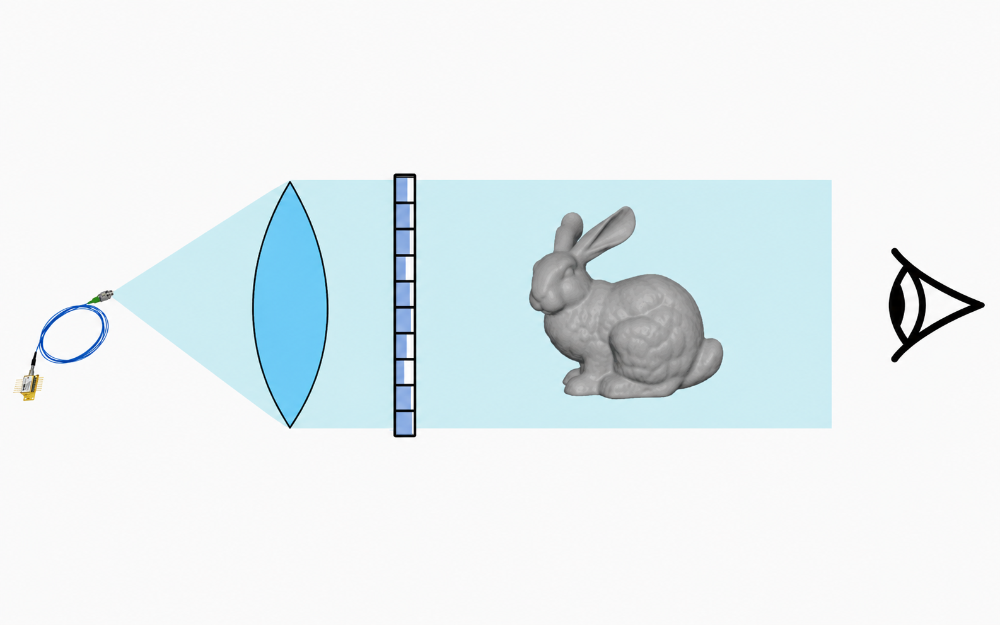

About
I am a Ph.D. student (2024-present) in the Department of Electrical and Computer Engineering (ECE) at HKU, advised by Prof. Evan Y. Peng at the WeLight Lab. I received my B.S. in Mathematics and Physics and B.Eng. from Tsinghua University in 2024.
Publications

Invited Paper: Revisiting Hologram Generation, Compression, and Display with AI-empowered Computational Techniques
SID Symposium Digest of Technical Papers, 2026